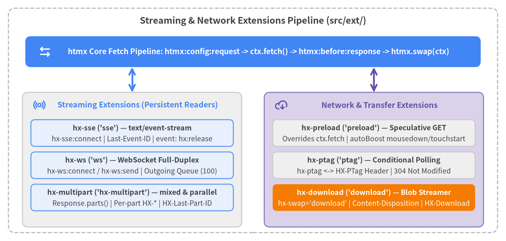

Streaming & Network Extensions
htmx v4.0.1 provides six first-party extensions for persistent server-to-client streaming (hx-sse, hx-ws, hx-multipart) and network transfer optimization (hx-preload, hx-ptag, hx-download). All extensions register globally via htmx.registerExtension() when their script is loaded and integrate directly with the Fetch-based ctx request pipeline.
| Symbol | Registration Name | Script File | Category | Primary Role |
|---|---|---|---|---|
hx-sse |
sse |
src/ext/hx-sse.js |
Streaming | Streams text/event-stream (SSE) responses, swapping unnamed messages and dispatching named DOM events. |
hx-ws |
ws |
src/ext/hx-ws.js |
Streaming | Full-duplex WebSocket connections (hx-ws:connect, hx-ws:send) with queued JSON serialization and HTML/JSON swapping. |
hx-multipart |
hx-multipart |
src/ext/hx-multipart.js |
Streaming | Streams multipart/mixed (sequential) and multipart/parallel (concurrent) parts with per-part HX-* headers and Response.prototype.parts(). |
hx-preload |
preload |
src/ext/hx-preload.js |
Network & Transfer | Prefetches GET requests on trigger events or boosted link mousedown/touchstart and overrides ctx.fetch. |
hx-ptag |
ptag |
src/ext/hx-ptag.js |
Network & Transfer | Tracks per-element polling tags via hx-ptag and the HX-PTag header for 304 Not Modified responses. |
hx-download |
download |
src/ext/hx-download.js |
Network & Transfer | Streams binary/file downloads via hx-swap="download", Content-Disposition: attachment, or HX-Download with progress events. |

Source Code
from drawlib.canvas import save, setup
from drawlib.icons import phosphor
from drawlib.lines import line
from drawlib.shapes import rectangle
from drawlib.styles import Styles
from drawlib.text import text
setup(width=180, height=86, dpi=150)
# Outer frame
rectangle((90, 43), width=174, height=80, style=Styles.MutedDashed.patch(shape_r=2.5))
text(
(90, 78.5),
"Streaming & Network Extensions Pipeline (src/ext/)",
style=Styles.DarkBold.patch(text_size=13.0),
)
# Core Request Pipeline (Focal Point 1)
rectangle((90, 67.5), width=162, height=11, style=Styles.PrimaryFlat.patch(shape_r=2.0))
phosphor.arrows_left_right((16, 67.5), width=4.8, style=Styles.WhiteBold)
text(
(92, 67.5),
"htmx Core Fetch Pipeline: htmx:config:request -> ctx.fetch() -> htmx:before:response -> htmx.swap(ctx)",
style=Styles.WhiteBold.patch(text_size=10.8),
)
# Left Group: Persistent Streaming Extensions
rectangle((47, 29), width=78, height=48, style=Styles.Neutral.patch(shape_r=2.0))
phosphor.broadcast((14, 48.5), width=4.5, style=Styles.PrimaryBold)
text((49, 48.5), "Streaming Extensions (Persistent Readers)", style=Styles.PrimaryBold.patch(text_size=11.0))
# SSE Card
rectangle((47, 38.5), width=72, height=9.5, style=Styles.PrimaryNeutral.patch(shape_r=1.5))
text((47, 40.3), "hx-sse ('sse') — text/event-stream", style=Styles.DarkBold.patch(text_size=10.2))
text((47, 36.3), "hx-sse:connect | Last-Event-ID | event: hx:release", style=Styles.Dark.patch(text_size=10.0))
# WS Card
rectangle((47, 27.0), width=72, height=9.5, style=Styles.PrimaryNeutral.patch(shape_r=1.5))
text((47, 28.8), "hx-ws ('ws') — WebSocket Full-Duplex", style=Styles.DarkBold.patch(text_size=10.2))
text((47, 24.8), "hx-ws:connect / hx-ws:send | Outgoing Queue (100)", style=Styles.Dark.patch(text_size=10.0))
# Multipart Card
rectangle((47, 15.5), width=72, height=9.5, style=Styles.PrimaryNeutral.patch(shape_r=1.5))
text((47, 17.3), "hx-multipart ('hx-multipart') — mixed & parallel", style=Styles.DarkBold.patch(text_size=10.2))
text((47, 13.3), "Response.parts() | Per-part HX-* | HX-Last-Part-ID", style=Styles.Dark.patch(text_size=10.0))
# Right Group: Network & Transfer Extensions
rectangle((133, 29), width=78, height=48, style=Styles.SecondaryNeutral.patch(shape_r=2.0))
phosphor.cloud_arrow_down((100, 48.5), width=4.5, style=Styles.SecondaryBold)
text((135, 48.5), "Network & Transfer Extensions", style=Styles.SecondaryBold.patch(text_size=11.0))
# Preload Card
rectangle((133, 38.5), width=72, height=9.5, style=Styles.Neutral.patch(shape_r=1.5))
text((133, 40.3), "hx-preload ('preload') — Speculative GET", style=Styles.DarkBold.patch(text_size=10.2))
text((133, 36.3), "Overrides ctx.fetch | autoBoost mousedown/touchstart", style=Styles.Dark.patch(text_size=10.0))
# PTag Card
rectangle((133, 27.0), width=72, height=9.5, style=Styles.Neutral.patch(shape_r=1.5))
text((133, 28.8), "hx-ptag ('ptag') — Conditional Polling", style=Styles.DarkBold.patch(text_size=10.2))
text((133, 24.8), "hx-ptag <-> HX-PTag Header | 304 Not Modified", style=Styles.Dark.patch(text_size=10.0))
# Download Card (Focal Point 2)
rectangle((133, 15.5), width=72, height=9.5, style=Styles.AccentFlat.patch(shape_r=1.5))
text((133, 17.3), "hx-download ('download') — Blob Streamer", style=Styles.WhiteBold.patch(text_size=10.2))
text((133, 13.3), "hx-swap='download' | Content-Disposition | HX-Download", style=Styles.White.patch(text_size=10.0))
# Connectors to Core Pipeline
line((47, 53), (47, 62), arrow_head="<->", style=Styles.PrimaryBold)
line((133, 53), (133, 62), arrow_head="<->", style=Styles.SecondaryBold)
save()
Streaming Extensions#
hx-sse (sse)#
Streams Server-Sent Events (text/event-stream) over Fetch ReadableStream with exponential-backoff reconnection, Last-Event-ID tracking, unnamed HTML fragment swapping, and named DOM event dispatch.
<!-- Registration & Whitelist -->
<script src="/ext/hx-sse.js"></script>
<meta name="htmx-config" content="extensions:sse">
<!-- Dedicated SSE Stream Connection -->
<div hx-sse:connect="/events/live"
hx-sse:close="stream-complete"
hx-trigger="load"
hx-swap="beforeend"
hx-config="sse.reconnectDelay:1s, sse.releaseOn:immediate">
</div>
| Kind | Name | Type / Default | Description |
|---|---|---|---|
| Registration | 'sse' |
htmx.registerExtension('sse', ...) |
Appends text/event-stream to the Accept header of every htmx request and intercepts any Content-Type: text/event-stream response in htmx_before_response. |
| Attribute | hx-sse:connect |
string (URL) |
Opens a GET SSE stream when hx-trigger fires (defaults to load). Legacy sse-connect is mapped with a console deprecation warning; sse-swap is removed. |
| Attribute | hx-sse:close |
string (event name) |
Closes the SSE stream cleanly (reason: 'message') when a server frame with event: <name> is received. Legacy sse-close is mapped with a warning. |
| Special Frame | event: hx:release |
Server SSE event | Resolves ctx.extensionPromise early so hx-indicator, hx-disable, and hx-sync request queues release while the stream stays open. |
| Header | Last-Event-ID |
Request header | Automatically sent on reconnect when the stream previously received an id: field without null bytes (\0). |
| Config | reconnect |
boolean (true if hx-sse:connect, else false) |
Enables automatic reconnection via htmx.config.sse or per-element hx-config="sse.{...}". |
| Config | reconnectDelay |
number | string (500) |
Base backoff delay in ms (base * 2^(attempt - 1)). Updated dynamically if the server sends a retry: frame. |
| Config | reconnectMaxDelay |
number | string (60000) |
Upper cap in ms for exponential backoff delay. |
| Config | reconnectMaxAttempts |
number (Infinity) |
Maximum consecutive reconnection attempts before stopping. |
| Config | reconnectJitter |
number (0.3) |
Random jitter factor (±30%) applied to computed reconnect delays. |
| Config | connectTimeout |
number | string (defaultTimeout) |
Timeout in ms for initial connection and reconnection fetch() calls. |
| Config | pauseOnBackground |
boolean (true if hx-sse:connect, else false) |
Cancels the stream reader when document.hidden is true and reconnects immediately when the tab becomes visible. |
| Config | releaseOn |
'immediate' | 'first' | 'end' |
When to resolve ctx.extensionPromise: 'immediate' (default for hx-sse:connect), 'first' (after first unnamed swap), or 'end' (default for standard requests). |
| Event | htmx:sse:before:connection |
{ connection } |
Cancelable (preventDefault() or connection.cancelled = true) before initial connect or reconnect. |
| Event | htmx:sse:after:connection |
{ connection } |
Fired once the stream response succeeds (connection.status is set). |
| Event | htmx:sse:before:message |
{ connection, message, cancelled, waitUntil } |
Cancelable before processing a frame (message: { data, event, id }). Call waitUntil(promise) to pause processing. |
| Event | htmx:sse:after:message |
{ connection, message } |
Fired after an unnamed message swaps or a named event is dispatched. |
| Event | htmx:sse:error |
{ connection, error, status?, url? } |
Fired on network errors, stream read exceptions, or non-2xx reconnect statuses. |
| Event | htmx:sse:close |
{ connection, reason } |
Fired on cleanup (reason: 'cancelled' | 'message' | 'ended' | 'removed' | 'cleanup'). |
<!-- 1. Intercepting a standard POST request that responds with text/event-stream -->
<form hx-post="/ai/chat" hx-target="#transcript" hx-swap="beforeend">
<input name="prompt" placeholder="Ask a question...">
<button type="submit">Stream Reply</button>
</form>
<div id="transcript"></div>
<!-- 2. Handling named SSE events via hx-on while swapping unnamed HTML frames -->
<div hx-sse:connect="/build/logs"
hx-sse:close="done"
hx-on:progress="document.querySelector('#bar').value = event.detail.data"
hx-on:htmx:sse:close="console.log('Closed:', event.detail.reason)">
</div>
hx-ws (ws)#
Provides full-duplex WebSocket connectivity (hx-ws:connect, hx-ws:send) with automatic URL normalization, form/value JSON serialization, an outgoing message queue, and raw HTML or structured JSON swapping.
<!-- Registration & Whitelist -->
<script src="/ext/hx-ws.js"></script>
<meta name="htmx-config" content="extensions:ws">
<!-- Connect & Send over WebSocket -->
<div hx-ws:connect="/chat/room-42" hx-config="ws.reconnectDelay:1s">
<div id="messages"></div>
<form hx-ws:send>
<input name="text" required>
<button type="submit">Send</button>
</form>
</div>
| Kind | Name | Type / Default | Description |
|---|---|---|---|
| Registration | 'ws' |
htmx.registerExtension('ws', ...) |
Initializes htmx.config.ws and processes [hx-ws:connect] and [hx-ws:send] elements. Closes open sockets with code 1000 on window pagehide. |
| Attribute | hx-ws:connect |
string (URL) |
Opens a WebSocket on hx-trigger (defaults to load). Normalizes http(s)://, //, /path, and relative paths to ws:// or wss://. Legacy ws-connect is mapped with a warning. |
| Attribute | hx-ws:send |
Presence attribute | Serializes form fields, hx-include, hx-vals (preserving JS types), and core HX-* headers into JSON { ...values, headers } on hx-trigger (submit, change, or click). |
| Incoming Payload | Raw HTML or JSON | string or { content, target?, swap?, select? } |
Non-JSON strings swap directly as HTML. JSON objects with content (or deprecated payload) swap content using optional target, swap (with swapEmpty:false), and select overrides. JSON without content is treated as data-only. |
| Config | reconnect |
boolean (true) |
Enables exponential-backoff reconnection when closed with a code in reconnectCodes. |
| Config | reconnectCodes |
number[] ([1001, 1005, 1006, 1011, 1012, 1013, 1014]) |
WebSocket close codes that trigger automatic reconnection. |
| Config | reconnectDelay |
number | string (500) |
Initial reconnect backoff delay in ms. |
| Config | reconnectMaxDelay |
number | string (60000) |
Maximum reconnect backoff delay in ms. |
| Config | reconnectMaxAttempts |
number (Infinity) |
Maximum reconnect attempts before cleaning up the connection. |
| Config | reconnectJitter |
number (0.3) |
Random jitter factor (±30%) applied to reconnect delays. |
| Config | pauseOnBackground |
boolean (true) |
Closes the socket when document.hidden is true and reconnects with attempt = 0 when visible. |
| Config | maxOutgoingMessagesQueueSize |
number (100) |
Maximum messages buffered in connection.queue while socket is connecting/reconnecting. Fires htmx:ws:error on overflow. |
| Config | protocols |
string | string[] | undefined |
Optional subprotocol(s) passed to new WebSocket(url, protocols). |
| Event | htmx:ws:before:connection |
{ connection } |
Cancelable before creating or reconnecting the WebSocket. |
| Event | htmx:ws:after:connection |
{ connection } |
Fired when the socket opens and before queued messages flush. |
| Event | htmx:ws:before:message:outgoing |
{ connection, message, cancelled, waitUntil } |
Cancelable before sending (message: { headers, values, data }). Set message.data to send custom text/binary payloads. |
| Event | htmx:ws:after:message:outgoing |
{ connection, message } |
Fired immediately after connection.socket.send(message.data). |
| Event | htmx:ws:before:message:incoming |
{ connection, message, cancelled, waitUntil } |
Cancelable before handling an incoming message (message: { data, text(), json() }). |
| Event | htmx:ws:after:message:incoming |
{ connection, message } |
Fired after incoming message processing and any DOM swap complete. |
| Event | htmx:ws:error |
{ connection?, url?, error } |
Fired on socket error, missing connection, queue overflow, or handler rejection. |
| Event | htmx:ws:close |
{ connection, reason, code } |
Fired when closed (reason: 'closed' | 'cancelled' | 'removed'). |
// Server-sent JSON message routing to a specific target and swap strategy:
// {
// "content": "<li id='msg-99'>Hello from WebSocket!</li>",
// "target": "#messages",
// "swap": "beforeend"
// }
// Customizing outgoing WebSocket payload format in JavaScript:
htmx.on('htmx:ws:before:message:outgoing', (evt) => {
const { message } = evt.detail;
message.data = JSON.stringify({
type: 'chat.message',
payload: message.values,
meta: message.headers
});
});
hx-multipart (hx-multipart)#
Streams multipart/mixed (sequential part swapping) and multipart/parallel (concurrent part swapping) responses with per-part HX-* headers, checkpointed HX-Last-Part-ID resumption, and a built-in Response.prototype.parts() parser prollyfill.
<!-- Registration & Whitelist -->
<script src="/ext/hx-multipart.js"></script>
<meta name="htmx-config" content="extensions:hx-multipart">
<!-- Persistent Multipart Stream -->
<div hx-multipart:connect="/dashboard/stream"
hx-multipart:close="click from:#stop-btn"
hx-target="#main-panel">
</div>
<button id="stop-btn" type="button">Stop Stream</button>
| Kind | Name | Type / Default | Description |
|---|---|---|---|
| Registration | 'hx-multipart' |
htmx.registerExtension('hx-multipart', ...) |
Appends multipart/mixed, multipart/parallel to Accept on every htmx request and installs Response.prototype.parts() and BodyPart.prototype.parts(). |
| Attribute | hx-multipart:connect |
string (URL) |
Starts a streaming GET request on hx-trigger (defaults to load) with reconnect: true and pauseOnBackground: true. |
| Attribute | hx-multipart:close |
string (trigger spec) |
Closes the active multipart connection (reason: 'part') when the specified trigger fires. |
| MIME Types | multipart/mixed, multipart/parallel |
Content-Type header |
multipart/mixed awaits each part's swap sequentially; multipart/parallel runs part swaps concurrently. |
| Per-Part Headers | HX-Target, HX-Swap, HX-Select, HX-Retarget, HX-Reswap, HX-Reselect |
Part HTTP headers | Override envelope headers and request context defaults (target, swap, select) for an individual BodyPart. |
| Per-Part Headers | HX-Part-ID / HX-Last-Part-ID |
Part / Request header | HX-Part-ID marks a part checkpoint. Completed ordered checkpoints update connection.lastPartId, sent as HX-Last-Part-ID on reconnect. |
| Per-Part Headers | HX-Trigger, HX-Location, HX-Redirect, HX-Refresh |
Part HTTP headers | Execute client-side event triggers or page navigation actions on an individual part. |
| Prollyfill API | Response.prototype.parts() |
() => AsyncIterable<BodyPart> |
Streaming Boyer-Moore-Horspool multipart parser supporting Content-Length fast-path and boundary scanning. |
| Config | reconnect, reconnectDelay, reconnectMaxDelay, reconnectMaxAttempts, reconnectJitter, connectTimeout, pauseOnBackground |
htmx.config.multipart |
Same reconnection and background-pause options as hx-sse (configured globally on htmx.config.multipart or ctx.request.multipart). |
| Event | htmx:multipart:before:connection |
{ connection } |
Cancelable before initial connection or reconnection. |
| Event | htmx:multipart:after:connection |
{ connection } |
Fired after a multipart connection or reconnection succeeds. |
| Event | htmx:multipart:before:part |
{ connection, ctx, part, cancelled, waitUntil } |
Cancelable before consuming and swapping an individual BodyPart. |
| Event | htmx:multipart:after:part |
{ connection, ctx, part } |
Fired after a BodyPart has been swapped and its checkpoint recorded. |
| Event | htmx:multipart:error |
{ connection, error, status? } |
Fired on MultipartParseError, network failure, or invalid reconnect Content-Type. |
| Event | htmx:multipart:close |
{ connection, reason } |
Fired when the stream closes (reason: 'cancelled' | 'part' | 'ended' | 'removed' | 'cleanup'). |
HTTP/1.1 200 OK
Content-Type: multipart/mixed; boundary=frame
--frame
Content-Type: text/html
HX-Target: #metrics-kpi
HX-Swap: innerHTML
HX-Part-ID: seq-101
<div class="kpi">99.98% Uptime</div>
--frame
Content-Type: text/html
HX-Target: #activity-log
HX-Swap: afterbegin
HX-Trigger: {"partLoaded": {"id": "seq-102"}}
HX-Part-ID: seq-102
<li>Deployment #402 verified</li>
--frame--
Network & Transfer Extensions#
hx-preload (preload)#
Prefetches GET responses before the user activates an element (or automatically on mousedown/touchstart for hx-boost links) and injects the in-flight or resolved fetch() Promise into ctx.fetch.
<!-- Registration & Whitelist -->
<script src="/ext/hx-preload.js"></script>
<meta name="htmx-config" content="extensions:preload">
<!-- Explicit Preload with Custom Trigger & TTL -->
<a hx-get="/reports/q4"
hx-target="#main"
hx-preload="mouseenter timeout:10s">
Q4 Financial Report
</a>
| Kind | Name | Type / Default | Description |
|---|---|---|---|
| Registration | 'preload' |
htmx.registerExtension('preload', ...) |
Hooks htmx_after_init (listener setup), htmx_before_request (ctx.fetch override), and htmx_before_cleanup (listener removal). |
| Attribute | hx-preload |
string (trigger spec) |
Trigger specification (parsed via api.parseTriggerSpecs()) that starts a passive GET prefetch. Supports the timeout:<interval> modifier (default 5000 ms). |
| Auto-Boost Behavior | Boosted <a href> |
mousedown + touchstart |
When hx-preload is omitted on a boosted <a> (or hx-get element with boost), automatically preloads on mousedown and touchstart unless autoBoost: false. |
| Config | htmx.config.preload.autoBoost |
boolean (true) |
Set to false to disable automatic preloading on boosted <a> links that do not carry an explicit hx-preload attribute. |
| Config | htmx.config.preload.boostEvent |
string ("mousedown") |
Desktop event name used alongside "touchstart" for automatic hx-boost preloading. |
| Config | htmx.config.preload.boostTimeout |
number | string (5000) |
Cache expiration time in ms for auto-boosted preloads (elt._htmx.preload.expiresAt). |
<!-- Configure global auto-boost preload behavior -->
<script>
htmx.config.preload = {
autoBoost: true,
boostEvent: 'mouseover',
boostTimeout: '8s'
};
</script>
<!-- Boosted links automatically prefetch on mouseover/touchstart -->
<nav hx-boost:inherited="true">
<a href="/overview">Overview</a>
<a href="/analytics">Analytics</a>
</nav>
hx-ptag (ptag)#
Attaches per-element polling tags (hx-ptag attribute and HX-PTag request/response header) so servers can return 304 Not Modified and skip redundant DOM swaps when polled fragments have not changed.
<!-- Registration & Whitelist -->
<script src="/ext/hx-ptag.js"></script>
<meta name="htmx-config" content="extensions:ptag">
<!-- Conditional Polling with Initial PTag -->
<div hx-get="/notifications/feed"
hx-trigger="every 5s"
hx-ptag="v1-8f92a">
No new notifications.
</div>
| Kind | Name | Type / Default | Description |
|---|---|---|---|
| Registration | 'ptag' |
htmx.registerExtension('ptag', ...) |
Reads hx-ptag in htmx_after_init, attaches HX-PTag in htmx_config_request, and updates elt._htmx.ptag in htmx_after_request. |
| Attribute | hx-ptag |
string (initial tag) |
Seeds api.htmxProp(elt).ptag when the element is initialized. Supports :inherited via api.attributeValue(). |
| Request Header | HX-PTag |
string |
Sent on outgoing requests from the element whenever elt._htmx.ptag is defined. |
| Response Header | HX-PTag |
string |
When returned by the server, updates elt._htmx.ptag for subsequent requests. Pair with HTTP 304 Not Modified (in htmx.config.noSwap) to skip unchanged swaps. |
// Express / Node.js example endpoint handling HX-PTag:
app.get('/notifications/feed', (req, res) => {
const currentTag = getFeedVersionTag(req.user.id);
if (req.get('HX-PTag') === currentTag) {
res.status(304).end(); // Skips swap (304 is in htmx.config.noSwap)
return;
}
res.set('HX-PTag', currentTag);
res.send(renderNotificationsHtml(req.user.id));
});
hx-download (download)#
Intercepts responses in htmx_before_response to stream binary/file downloads into a Blob instead of swapping into the DOM, firing granular progress events and parsing RFC 5987 filenames.
<!-- Registration & Whitelist -->
<script src="/ext/hx-download.js"></script>
<meta name="htmx-config" content="extensions:download">
<!-- Explicit Download Swap with Progress Bar -->
<button hx-get="/exports/audit-log.csv"
hx-swap="download"
hx-on:htmx:download:progress="
q('#dl-bar').value = event.detail.percent ?? 0
">
Export CSV
</button>
<progress id="dl-bar" max="100" value="0"></progress>
| Kind | Name | Type / Default | Description |
|---|---|---|---|
| Registration | 'download' |
htmx.registerExtension('download', ...) |
Intercepts matching responses in htmx_before_response, clears ctx.requestTimeout, and holds ctx.extensionPromise during streaming. |
| Swap Style | hx-swap="download" |
ctx.swap === 'download' |
Forces the response body to be streamed as a file download regardless of response headers. |
| Response Header | Content-Disposition |
attachment; filename=... |
Automatically triggers a download when Content-Disposition includes attachment. Parses RFC 5987 filename*=UTF-8''... (with decodeURIComponent) before ASCII filename=. |
| Response Header | HX-Download |
<url> |
Fetches <url> asynchronously as a streamed file download while allowing the main htmx response to proceed normally. |
| Event | htmx:download:start |
{ total, ctx } |
Fired on ctx.sourceElement when streaming begins (total is numeric Content-Length or null). |
| Event | htmx:download:progress |
{ loaded, total, percent, ctx } |
Fired after each ReadableStream chunk (percent is Math.round(loaded / total * 100) or null). |
| Event | htmx:download:complete |
{ filename, size, ctx } |
Fired after the Blob object URL is clicked and revoked (size is blob.size in bytes). |
<!-- Server-triggered download from a form submission via Content-Disposition or HX-Download -->
<form hx-post="/invoices/generate"
hx-target="#status"
hx-on:htmx:download:complete="
this.querySelector('#status').textContent = `Downloaded ${event.detail.filename} (${event.detail.size} bytes)`
">
<input type="hidden" name="month" value="2026-11">
<button type="submit">Generate Invoice PDF</button>
<span id="status"></span>
</form>